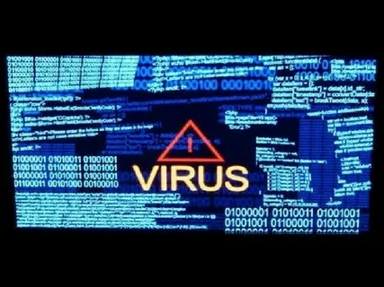

Опасные вирусы
популярные вирусы
The Creeper (1971)
Первый в истории действующий компьютерный вирус был больше академическим исследованием и, как и стоит ожидать в таком случае, был в целом безвреден. Он назывался Creeper («Ползун») и был создан более 40 лет назад сотрудником американского оборонного агентства DARPA (Defense Advanced Research Projects Agency). Это был примитивный червь, который искал в сети другие компьютеры (а сети тогда были локальными и небольшими) и копировал себя на новые машины. На «старой» зараженной машине выводилось сообщение: «I’M THE CREEPER: CATCH ME IF YOU CAN» («Поймай меня, если сможешь»), а на новой вирус проверял наличие своей копии, чтобы избежать двойного заражения.
Stoned (1988)
Известный «шуточный» вирус Stoned («Под кайфом») был написан для того, чтобы показать встроенное послание пользователю. Впервые Stoned был обнаружен в 1988 году в Новой Зеландии, где его предположительно написали местные студенты. Это был бут-вирус, который модифицировал загрузочные секторы дискет вместо заражения исполняемых файлов. Как и Creeper, он не вредил компьютеру. При загрузке с зараженной дискеты с вероятностью 1 к 8 на экран выводилось сообщение: «Your computer is now stoned», то есть «Ваш компьютер под кайфом». Некоторые экземпляры содержали более четкий призыв к действию: «Legalize Marijuana». Похоже, это сообщение достигло желаемых адресатов (а именно политиков в США, штат Колорадо) только в 2012 году.
